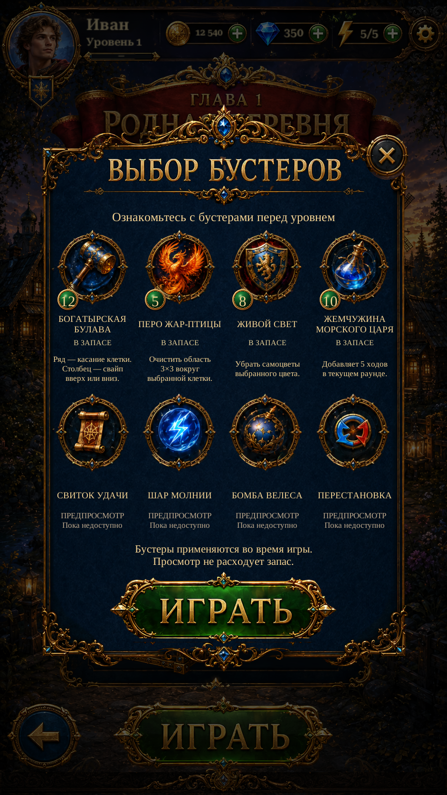

Original Booster Rims R2Original Booster Rims · R2
The circular metal band is now extracted separately. Only the badge footprints require repair; whole mirrored artwork patches no longer replace the lower rim. Existing shared framed sprites use the corrected bands.
Inspect original / isolated band / corrected icon · Report
Actual Unity captures. The original reference is labelled separately. Live badges remain independent from the icon art.
